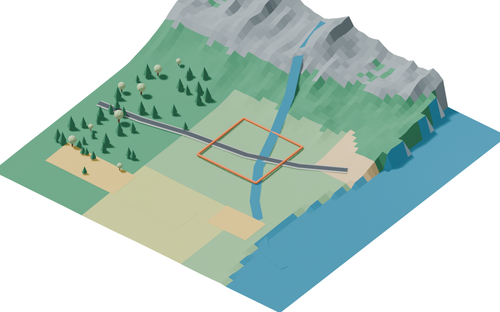
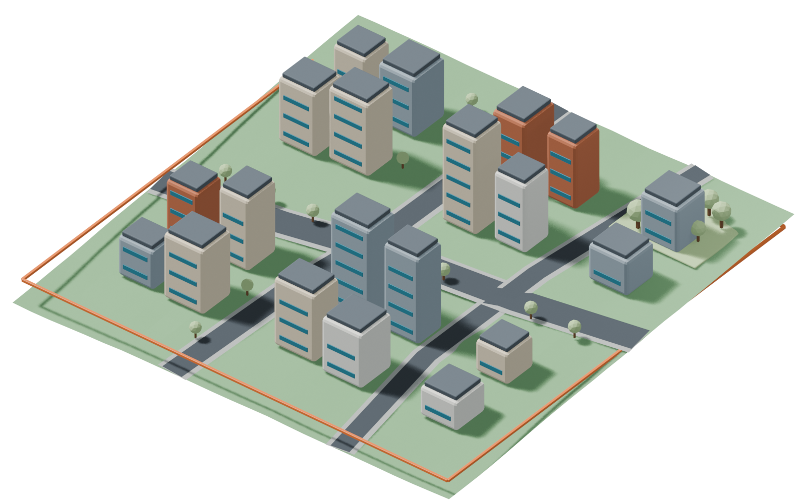
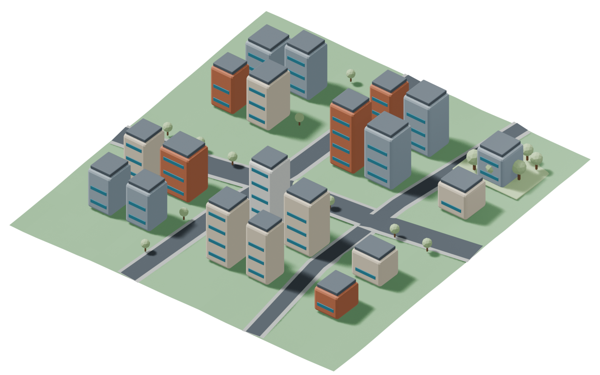
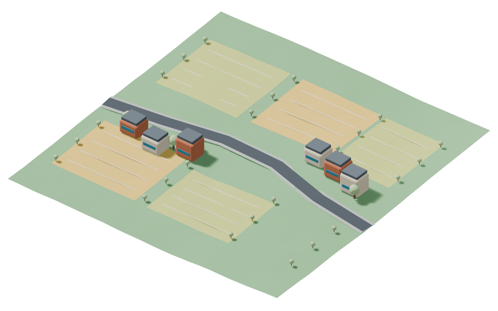
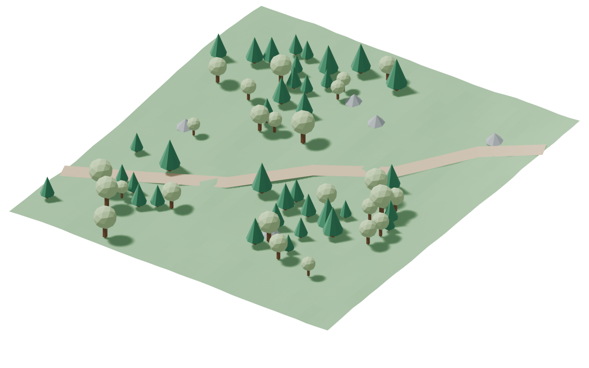
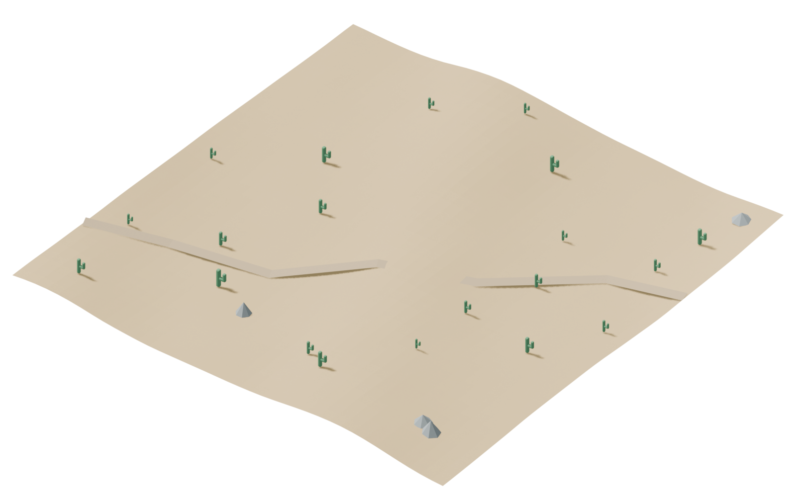
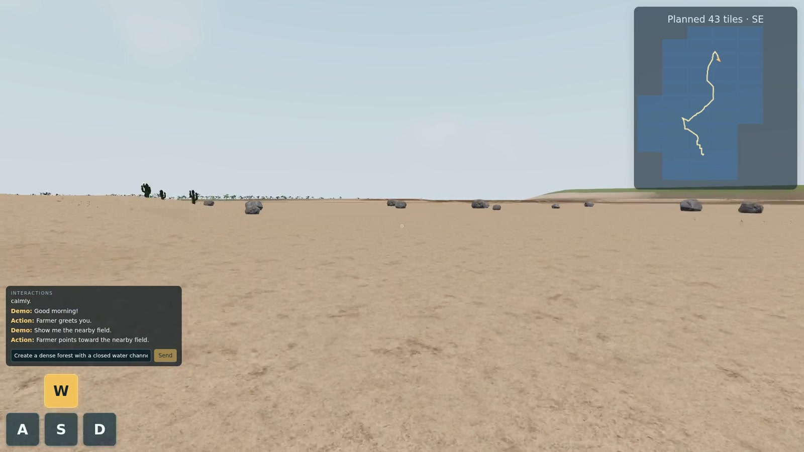
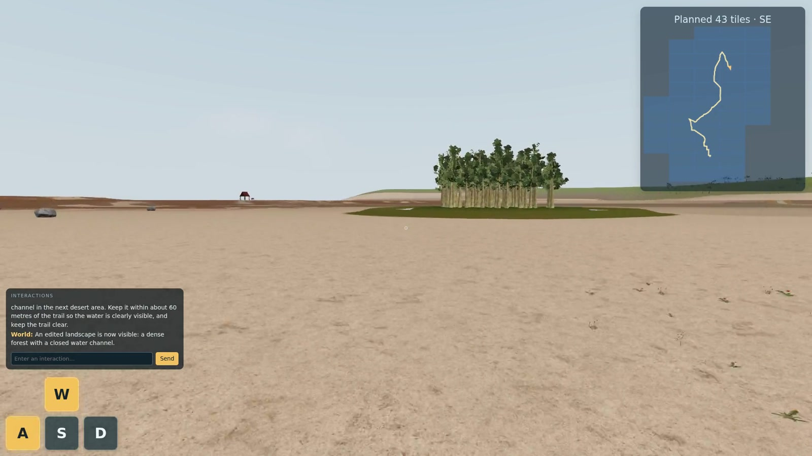

An open world should not end at the boundary of the scene that has already been generated. A player should be able to keep exploring, change the world through language, and return to earlier places as often as they choose.
Consider a player who takes an unplanned route out of a city, asks a resident for directions, and requests a forest in the next unexplored area. Later, they return to the city and the places they changed. Supporting this experience requires more than generating each new view: the system must extend a connected environment, interpret new intent during exploration, and retain what has already happened.
Three requirements follow:
- Infinite exploration. Extend the world on demand without specifying the complete map or the player’s route in advance.
- Dynamic, language-guided interaction. Respond to open-ended requests with low latency, editing existing scenes or shaping the content of upcoming regions as exploration continues.
- Arbitrarily repeated revisits. Preserve spatial identity and accepted edits while keeping active rendering memory bounded.
Together, these requirements suggest a separation of responsibilities. Semantic planning determines what should exist and how it connects to its surroundings. Local generation builds the spatial detail as it becomes relevant. Persistent state retains accepted plans and changes independently of the geometry currently loaded into the renderer.
WorldStream connects streaming world generation, dynamic language-guided editing, and persistent state. Its hierarchical planner uses geographic and ecological knowledge to organize regions and local neighborhoods; procedural algorithms realize those decisions, and a movement-aware scheduler prepares content ahead of the player. Users can modify the current scene or steer future generation while exploring. This architecture can, in principle, keep extending beyond a fixed scene boundary.
The demo below shows this design in action. The following sections explain the planning, generation, scheduling, and interaction mechanisms behind it.
01 / SYSTEM OVERVIEW
A planner, a generator,
and a persistent world.
WorldStream separates three questions: what should exist, how it should be built, and when it is needed. The planner answers the first through hierarchical decisions. Local procedural algorithms answer the second. A movement-aware scheduler coordinates both around the player.
Semantic decisions
Regional layout, land use, city density, vegetation communities, and requested changes.
Spatial realization
Terrain, road networks, building placements, individual plants, and executable actions.
Persistent state
Accepted plans, object identities, generation parameters, and user edits.
All three operate on structured world state. The planner receives scene facts and returns semantic decisions; it does not need to inspect the rendered image. The renderer turns the resulting geometry and assets into pixels. This representation lets the same world support generation, interaction, and revisits.
For example, “a sparse woodland belt between a village and a forest” is a planning decision. The exact position, species, scale, and orientation of each tree are local generation decisions. Saving the accepted plan and its realization makes the woodland part of a place the player can return to.
02 / HIERARCHICAL PLANNING
Macro plans the region.
Micro resolves the neighborhood.
A coherent world needs decisions at more than one scale. A local tile should fit into a larger settlement or landscape, while still containing useful detail. The Macro Planner establishes regional structure, and the Micro Planner refines nearby tiles within that structure. The current implementation uses Jev from TypeSafe for both planning roles.
Macro Planner: regional relationships
Macro considers a region of tiles—5 × 5 in the inspected planner—and decides its broad organization. Its inputs include terrain and water evidence, neighboring regional plans, and geographical rules. Its output describes settlement patterns, ecological cover, major road corridors, and transitions between land uses.
A region might contain clustered villages linked by a main road, fields around the settlements, and woodland becoming denser toward the hills. Macro gives the local tiles a shared direction, so each tile does not independently invent an unrelated scene.
Micro Planner: local structure and density
Micro receives the parent plan, local terrain, neighboring roads and zones, and available generation capabilities. It decides what belongs in a nearby tile: the local land-use mix, building or vegetation density, streetscape, and community structure. A two-by-two subdivision allows mixed content, such as housing beside a park or farmland meeting a forest edge.


EXAMPLE MACRO OUTPUT
- Settlement
- Suburb-to-core gradient
- Ecology
- Woodland patches
- Main connection
- Coastal road corridor
- Water
- River corridor
EXAMPLE MICRO OUTPUT
- Local content
- Mixed-use city blocks
- Density
- Dense
- Structure
- Irregular blocks
- Streetscape
- Tree-lined avenues
Illustrative summaries of the decisions at each level. Actual requests and responses use typed fields and allowed choices.
Knowledge and capabilities are part of the input
The planner receives three complementary kinds of context. World facts describe the actual terrain, water, existing objects, and neighboring connections. Domain knowledge describes plausible settlement and ecological relationships. Capability descriptions tell the planner what the local generators and action modules can execute.
We organize geographic, hydrological, and ecological knowledge into structured planning priors. Combined with local terrain evidence, these priors guide the relationships among landforms, water, vegetation, and human settlement. They include:
- Considering terrain suitability and road access when selecting settlement locations.
- Aligning riparian and wetland vegetation with actual riverbanks and water margins.
- Conditioning forest composition and structure on moisture, elevation, and slope.
- Connecting rural areas to forests through gradual changes in tree density and canopy structure, such as a sparse woodland belt at the village edge.
Micro also chooses among compact capability cards for settlement blocks, natural landscape mosaics, and transition regions. These are descriptions of executable generation families. The model selects an appropriate family and its parameters; local code implements the result.
03 / LOCAL GENERATION
The planner sets the structure.
Local algorithms place the detail.
The planner specifies city density or vegetation-community density at a useful semantic scale. It does not enumerate every building, plant, or road segment. Procedural algorithms turn those decisions into geometry and object placements [1].
For cities, local generation connects the planned road entries, constructs a street network within the regional layout, allocates building space, and places compatible assets at the requested density and height range. For natural areas, it realizes the selected community as tree groups, clearings, edge vegetation, and ground detail.

CityDensity and road structure → blocks and buildings

RuralSettlement pattern → houses, fields, and access paths

ForestCommunity and abundance → trees, gaps, and edges

DesertTerrain and ecology → relief, rocks, and sparse cover
Controlled variation
Randomness supplies variation within the plan. A forest generator can use spatially coherent fields to produce dense stands and open gaps, then sample individual trees with spacing constraints. A sparse woodland edge and a closed canopy use different distributions, even when they share the same asset library. Related spatial sampling methods provide useful background for controlling object spacing [2].
Generation uses stable seeds, so variation is repeatable for the same stored plan and compatible generator version. The player encounters a particular arrangement of trees and buildings, not a fresh random arrangement every time the renderer loads the area.
Geometric feasibility
Before content is accepted, local checks test whether it fits the actual world. Buildings need usable ground and road access. Vegetation must respect water, slope, and occupied space. Road connections must agree with neighboring tiles. Scene edits must fit their permitted region and preserve protected paths and objects.
This separates two kinds of reasoning: geographical knowledge helps the planner choose a plausible place, while local geometry checks determine whether that choice can be built at the proposed location.
04 / DYNAMIC SCHEDULING
Generate where the player
is going next.
The scheduler maintains a moving neighborhood around the player instead of treating the entire map as equally urgent. It distinguishes the required near field, a preferred buffer, and a farther prefetch region. Nearby tiles need usable geometry; more distant tiles may need only a plan.
One way to visualize this is a 3 × 3 required neighborhood, a 4 × 4 preferred window extending toward movement, and a prefetch corridor farther ahead. These sizes illustrate the roles of the windows; the policy controls their sizes and planning and compilation horizons separately. They are distinct from the larger regions used by the Macro Planner.
Near field first. Prefetch ahead.
Moving east
- Required · 3 × 3Fill missing nearby content first
- Preferred · 4 × 4Prepare the next local neighborhood
- Prefetch corridorPlan farther along the likely route
Turning changes which future tiles are prioritized. Already accepted world state is retained.
Priority follows movement and readiness
At each update, the scheduler uses player position, movement direction, speed, camera direction, and tile readiness to reprioritize work. Missing content under or immediately around the player comes first. Tiles expected to be entered soon receive higher priority than equally distant tiles behind the player. When the player turns, the predicted corridor moves with them.
Planning reaches farther ahead than compilation. Macro prepares regional context, Micro resolves local plans, and the compiler builds geometry closer to when it is needed. This ordering spreads work over time while avoiding the cost of fully constructing every distant region.
The scheduler also reuses completed plans, merges duplicate requests, and limits concurrent model calls. An area that is already planned needs construction work, not another planning request. Obsolete speculative work can be deprioritized without discarding accepted world content.
Rendering memory and world memory are separate
Distant geometry can leave the renderer while its plan, object identities, and edits remain stored. Revisiting a region reloads or reconstructs that saved state. Active rendering memory therefore follows the current neighborhood, while persistent storage grows with explored and modified content.
Persistent records, transient render resources.
World state retained
Build from the accepted plan.
The nearby tile becomes renderable. Its plan, object identities, and generation parameters are stored independently of its meshes.
05 / INTERACTION DESIGN
The planner selects intent.
Local capabilities execute it.
The planner accepts open-ended natural-language input, allowing users to express questions, preferences, and intended changes in their own words, without following a fixed command format or including specific trigger keywords. It interprets the meaning of the request together with the current world context to identify the relevant objects, select a supported capability, and determine its parameters. This gives the world a language-based interface for understanding user intent and translating it into executable behavior.
Generation and interaction use the same division of responsibility. A request such as “where is the hospital?” requires intent understanding, but the answer must use the hospital that actually exists in the world. The planner selects the action and target; local code retrieves its position, calculates direction and distance, and presents the result.
The same structure covers different behaviors. Feeding a sheep selects an actor and feeding action. Calling it closer invokes local movement and collision handling. A helicopter request chooses a spawn and approach plan, while the flight controller handles motion. The model is making a decision over available capabilities, rather than generating animation or physics code.
| Capability | What the planner decides | What local code does |
|---|---|---|
locate_object | Which existing target the user means | Query position and calculate a grounded answer |
interact_with_npc | Actor and supported action | Run animation, navigation, and state updates |
spawn_and_move_entity | Entity, origin, and approach behavior | Load the asset and execute movement |
set_future_region_intent | Upcoming region and desired content | Store the intent for subsequent planning |
edit_region | Region, size, zones, and spatial relationships | Generate and attach the edited scene |
The names above summarize the existing capability families at an abstract interface level. Each capability involves more detailed execution logic for target resolution, movement, animation, geometry, and validation. Scene objects carry persistent identities and mutable state. Interactions invoke the corresponding behavior functions to update that state—for example, assigning an NPC a movement target, changing its activity to feeding, or updating an entity’s position. The runtime then realizes those state changes through the appropriate controllers and rendering updates.
Editing a place versus specifying what comes next
An instruction can target either existing content or future generation. “Put a grove beside this trail” changes a local region that is already present. “Make the next area a forest” adds a semantic constraint to an upcoming region, which is then processed through normal Micro planning and local generation.
For local editing, the model selects compositional parameters: location, extent, zone types, and relationships such as adjacency or containment. Water surrounding woodland and woodland surrounding water are two assignments to the same relation, not two dedicated scene templates. The local region compiler turns that relation into terrain, water, and vegetation.


Before applying a result, the runtime checks that its target and source scene are still current. It prepares the resources and updates the visible scene only when the change is ready. The accepted edit becomes retained world state, so subsequent interaction and reconstruction can refer to it [3].
06 / RESPONSIVENESS
Low latency is a system property.
The planner supplies fast semantic decisions, but perceived latency also depends on when those decisions are requested and how much local work follows. Compact outputs avoid asking the model to place every object. Regional planning shares context across tiles. Prefetch moves work ahead of the player, and reusable assets reduce construction cost.
The useful measurement is the full path from a request to visible content: context preparation, model response, local generation, asset preparation, and rendering. These stages should be measured separately as well as together.
Under warm-cache conditions, the estimated plan-to-scene latency is ~2.3 seconds: ~0.7 seconds for the planner and 1.6 seconds for post-response processing and rendering. Directional prefetch schedules this work ahead of the player to keep exploration responsive.
WorldStream’s design connects semantic flexibility with explicit execution: regional and local plans describe a coherent world, procedural algorithms realize it, and persistent state lets interaction and exploration continue beyond a single scene.
07 / OUTLOOK
Toward richer world models.
WorldStream’s streaming planner, low-latency interaction, and persistent state provide a foundation for improving visual quality along two complementary directions.
A control engine for streaming video. White-box geometry and low-poly assets could keep local compilation and rendering lightweight, leaving more compute for a streaming video decoder [4]. The engine would retain layout, object identities, and edits, while the video model adds richer appearance from consistent spatial conditioning [5]. This could combine open-ended exploration and revisits with higher-quality generated video.
A higher-fidelity explicit 3D world. The current prototype focuses on planning and interaction; its local generators and assets can be upgraded. More capable 3D generation and refinement methods [6][7], combined with prefetch and caching, could prepare detailed content ahead of arrival and reuse it across visits. This offers a path toward high-quality 3D world models with, in principle, infinite map expansion and open-ended exploration.